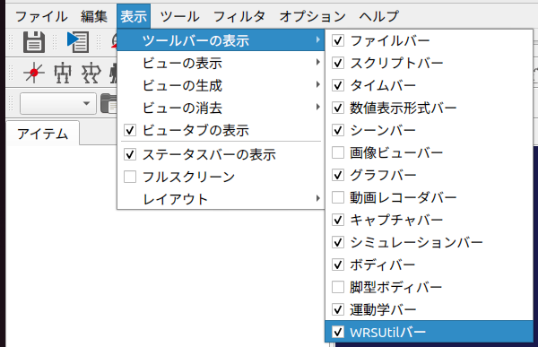
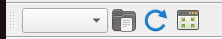
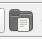
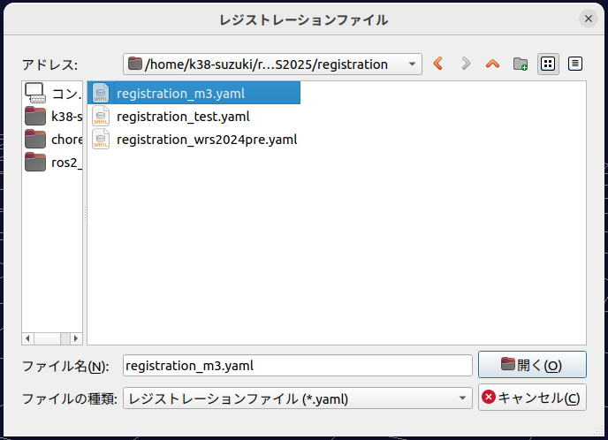
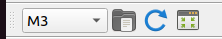
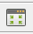
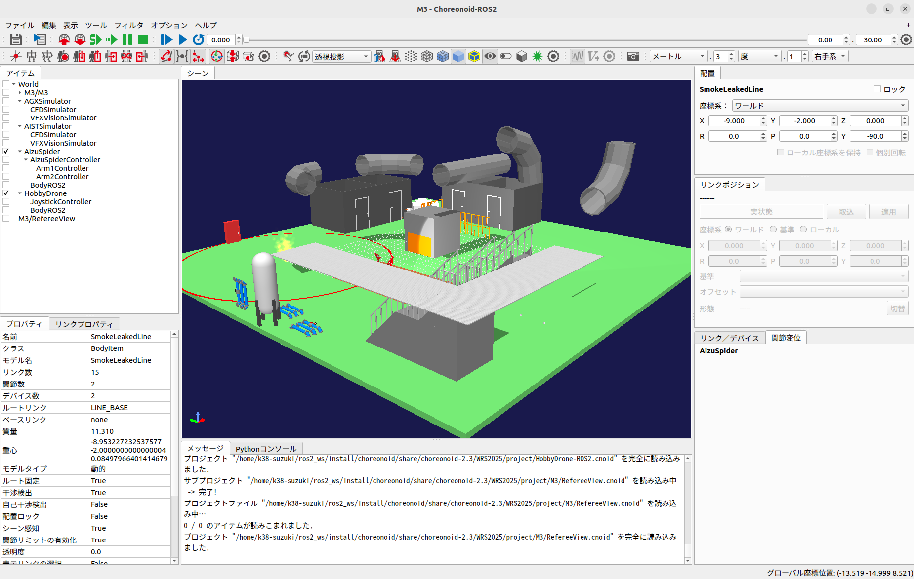

World Robot Summit 2025
This section explains how to set up the competition environment for the WRS 2025 Main Competition. This feature is designed to automatically load the environment and place robot models. As of April 2025, the official competition environment is not yet public. Please use the practice environment described below to prepare for the competition until the official release. To use this feature, you must have the package found here. Note: The content on this page is subject to change depending on the progress of the competition environment development.
Material Settings
This section explains the material settings required when using AGX crawlers on a custom robot. These settings are mandatory for custom robots to climb stairs and slopes within the competition environment. Please ensure you verify them.
Editing the YAML File
First, edit the YAML file containing the material definitions. Specifically, edit materials.yaml located in WRS2025/share/default.
Open the YAML file in any text editor and modify lines 272 and 273 as shown below:
reference_body: <your robot name>
reference_link: <root link of your robot>
In line 272, change <your robot name> to the body name of your custom robot. For example, if your robot's body name is "MyRobot":
reference_body: MyRobot
Next, in line 273, change <root link of your robot> to the name of your robot's root link. For example, if the root link is named "CHASSIS":
reference_link: CHASSIS
Save the YAML file to complete this step.
Specifying Materials
After editing the YAML file, update the parameters for the AGX crawler.
First, specify the material for the AGXVehicleContinuousTrackDevice. Below is an example description:
-
type: AGXVehicleContinuousTrackDevice
name: TRACK_R
sprocketNames: [ SPROCKET_R ]
rollerNames: [ ROLLER_R ]
idlerNames: [ IDLER_R ]
upAxis: [ 0, 0, 1 ]
numberOfNodes: 42
nodeThickness: 0.01
nodeWidth: 0.1
nodeThickerThickness: 0.02
useThickerNodeEvery: 3
material: WRSCommonTracks
nodeDistanceTension: 0.002
stabilizingHingeFrictionParameter: 8e-07
minStabilizingHingeNormalForce: 100
hingeCompliance: 2e-05
hingeSpookDamping: 0.01
nodesToWheelsMergeThreshold: -0.1
nodesToWheelsSplitThreshold: -0.05
As shown above, set the material parameter to "WRSCommonTracks".
Next, edit the parameters for the AGX crawler wheels (sprockets, rollers, and idlers). Below is an example description for a sprocket link:
-
name: SPROCKET_L
translation: [ 0.25, 0.2, 0 ]
jointId: 0
parent: CHASSIS
jointType: revolute
jointAxis: Y
centerOfMass: [ 0, 0, 0 ]
material: WRSCommonWheel
.
.
.
Set the material parameter to "WRSCommonWheel".
Repeat this for the rollers and idlers as well.
Example for a roller link:
-
name: ROLLER_L
translation: [ 0, 0.2, 0 ]
jointId: 2
parent: CHASSIS
jointType: revolute
jointAxis: Y
centerOfMass: [ 0, 0, 0 ]
material: WRSCommonWheel
.
.
.
Example for an idler link:
-
name: IDLER_L
translation: [ -0.25, 0.2, 0 ]
jointId: 4
parent: CHASSIS
jointType: revolute
jointAxis: Y
centerOfMass: [ 0, 0, 0 ]
material: WRSCommonWheel
.
.
.
This completes the material specification.
Finally, rebuild Choreonoid. If you are using Choreonoid in a ROS 2 environment, newly added files may not be recognized during the rebuild. In that case, add the --cmake-clean-cache option.
Once rebuilt, verify materials.yaml at the following locations:
* ROS 2: ros2_ws/install/choreonoid/share/choreonoid-x.x/WRS2025/share/default
* Standalone: choreonoid/build/share/choreonoid-x.x/WRS2025/share/default
(Replace choreonoid-x.x with your specific version).
Open the file in a text editor. If the changes made in the Editing the YAML File section are reflected, the material setup is complete.
Loading the Practice Environment (Basic - Command Line)
Launch Choreonoid using the following command.
If using Choreonoid in a ROS 2 environment:
$ ros2 run choreonoid_ros choreonoid ~/ros2_ws/src/choreonoid/ext/WRS2025/registration/registration_m3.yaml --wrs-util <mission_name>
If using Choreonoid standalone (e.g., from choreonoid/build):
$ ./bin/choreonoid ../ext/WRS2025/registration/registration_m3.yaml --wrs-util <mission_name>
The arguments available for <mission_name> are:
Argument
Details
M3
Loads the practice environment. AizuSpiderDA and HobbyDrone are placed by default.
To place your own robot in the practice environment, follow the steps in the Loading the Practice Environment (Advanced) section below. You will need to edit the robot_list parameter in registration_m3.yaml (located in WRS2025/registration), either directly or by copying the file.
Loading the Practice Environment (Basic - GUI)
If you are not comfortable with the command line, you can load the practice environment via the GUI.
First, enable the toolbar by going to View > Show Toolbar in the main menu and checking WRSUtil Bar.

The WRSUtil bar will appear in your toolbar:

Next, click the Open icon on the WRSUtil bar:

In the dialog that appears, select ~/ros2_ws/src/choreonoid/ext/WRS2025/registration/registration_m3.yaml and open it.

Once the YAML file is loaded, the combo box on the WRSUtil bar will update:

The project "M3" defined in the YAML file is now registered and selected. If other projects were defined, you could select them from this menu.
Finally, click the Build icon on the WRSUtil bar to load the practice environment:

Once finished, the environment will be displayed (actual visuals may vary slightly).

This completes the basic loading of the practice environment.
Loading the Practice Environment (Advanced)
This section explains how to place your custom robot model when loading the practice environment.
Copying the robot model
Creating the project
Creating the YAML file
Launching Choreonoid
Copying the Robot Model
Create a directory with an arbitrary name (e.g., model_<team_name>) under choreonoid/ext/WRS2025/model and copy all robot model files into it.
Rebuild Choreonoid. For ROS 2 users, use the --cmake-clean-cache option if the new files aren't recognized. After the build, verify the directory exists in the install or build/share directory (under WRS2025/model).
Creating the Project
Launch Choreonoid and load your custom robot model from the share directory mentioned above. Configure necessary Simple Controllers and settings.
If using ROS 2 and publishing sensor data (camera, range sensor, etc.), add a BodyROS2 item as a child of the robot model.
Save the project (.cnoid) in a new directory (e.g., project_<team_name>) under WRS2025/project. Save the project using the name of your robot model. Take note of this project name for the YAML step.
Rebuild Choreonoid again to ensure the project file is placed in the install or build/share directory.
Creating the YAML File
Use WRS2025/registration/registration_m3.yaml as a template. Copy and rename it (e.g., registration_m3_<team_name>.yaml).
Edit line 2 of the YAML file:
robot_list: &RobotList [ Name of directory created / Name of project saved ]
Example (team "team1", directory "project_team1", project "my_robot.cnoid"):
robot_list: &RobotList [ project_team1/my_robot ]
Standard models available by default:
Project Name
Details
AizuSpiderDA-ROS2
AizuSpiderDS for AGX simulator (subscribes to
/joy).AizuSpiderDS-ROS2
AizuSpiderDS for AIST simulator (subscribes to
/joy).MonoCrawlerNA-ROS2
MonoCrawler for AGX simulator (subscribes to
/joy).MonoCrawlerNS-ROS2
MonoCrawler for AIST simulator (subscribes to
/joy).HobbyDrone-ROS2
HobbyDrone (subscribes to sensor_msgs::msg::Joy /joy2).
SampleDrone-ROS2
SampleDrone (subscribes to
/cmd_vel). Requireschoreonoid_ros2_sample_drone_tutorial.
To use your custom robot (my_robot) alongside the AGX AizuSpider (AizuSpiderDA-ROS2):
robot_list: &RobotList [ project_team1/my_robot, AizuSpiderDA-ROS2 ]
The first robot in the list appears on the left, the second on the right.
Launching Choreonoid
Launch Choreonoid with your YAML file:
ROS 2:
$ ros2 run choreonoid_ros choreonoid <path/to/yaml> --wrs-util M3
Standalone:
$ ./bin/choreonoid <path/to/yaml> --wrs-util M3
If the robot placement is incorrect, adjust the start_position [x, y, z] in meters within your YAML file.
Conclusion
Pre-configured projects for the practice environment are also available:
WRS2025/project/M3/M3-NoROS2.cnoid
WRS2025/project/M3/M3-ROS2.cnoid
These can be opened directly via Main Menu > Open Project to quickly verify the practice environment.